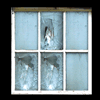

教室で見つかる光源：

窓
窓は闇の中でも簡単に見え、パチンコの弾やかんしゃく玉で割れます。割れると、窓は光を部屋の反対側まで投射します。割れた窓は元に戻せず、その光は永久に残ります。電力を必要としないため、窓は電力ゲージを上げません。
 ランプ
ランプ
ランプは中規模の光で周囲を照らし、つけたり消したりできます。ランプは1つずつつける、もしくは消す必要があります。
 テレビ
テレビ
テレビは直接操作できません。まずはテレビのリモコンを探し、テレビをつける必要があります。テレビはスイッチが入ると、画面の前方を小さな光で照らします。1つの部屋に複数のテレビがある場合、テレビのリモコンを使って切り替えることができます。
 PCモニター
PCモニター
コンピューターのモニターはネットワークを通してリンクしています。モニターを1つつけると、部屋にあるすべてのモニターがオンになります。消す場合はすべてのモニターがオフになります。このため、PCモニターは電力ゲージをすぐにいっぱいにしてしまいます。また、PCモニターの光はショートしやすい傾向にあります。モニターの光がちらつき始めたら、急いで脱出しないと闇に捕まります。一度に2つ以上のPCモニターがショートすることはありません。ショートしたモニターは数秒後に再び戻ります。
 首振りライト
首振りライト
首振りライトは首振り扇風機と同様に動きます。ゆっくりと一定の速度で動き、端まで来ると反対側へ戻る前に数秒止まります。首振りライトはジェイクの懐中電灯同様に大きな光を照らし、通行を可能にします。首振りライトが消された後につけられると、消された地点から首振りを再開します。
 モーションセンサー
モーションセンサー
ジェイクが近付く、もしくは近くに何かが通ると、モーションセンサーは大きな光を照らします。起動すると、点滅して消えるまで10秒の間点灯しています。モーションセンサーがオフになった後は再起動できますが、10秒以上連続でモーションセンサーを起動し続けることはできません。